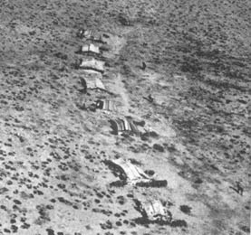
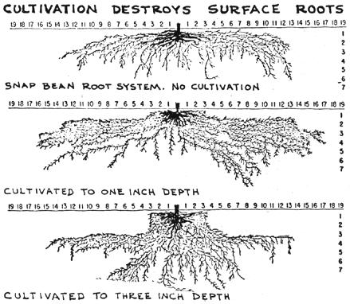
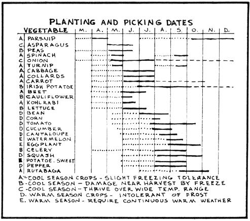
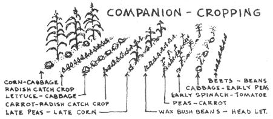
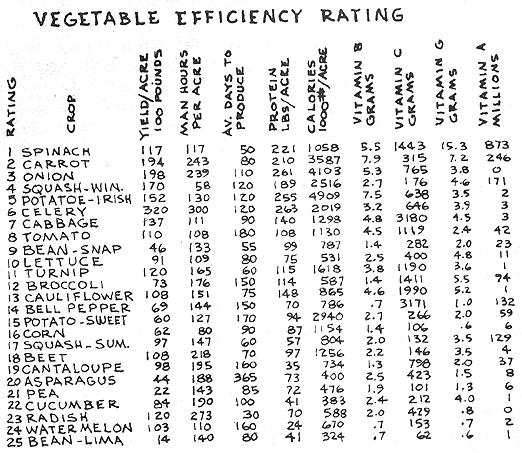
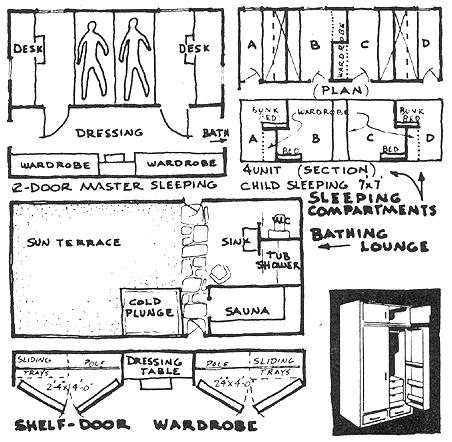
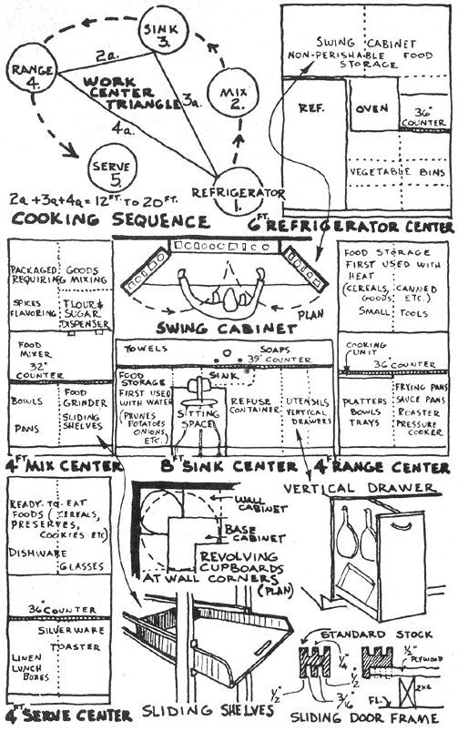
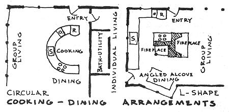

You ask me to plough the ground. Shall I take a knife and tear my mother's bosom? Then when I die she will not take me to her bosom to rest. You ask me to dig for stones! Shall I dig under her skin for bones? Then when I die I cannot enter her body to be born again. You ask me to cut grass and make hay and sell it and be rich like white men. But how dare I cut my mother's hair?
Nevada Chief Smohalla's reply to
agricultural directives from Washington
The photo on the following page was taken by Richard St. Barbe Baker, leader of the 1952 Sahara University Expedition. It is an aerial view of a Bedouin encampment in the Libyan Desert. In better times this land was heavily forested, later to be cleared and tilled to provide grain for Rome. As Mr. Baker observes, "An iron plow is a dangerous implement, because it loosens the earth to a considerable depth, allowing the soil to be washed away in the first torrential downpour." In equatorial regions, especially, the clearing away of extensive areas for the production of row crops, such as corn or cotton, leads to certain disaster . . . even to the decline and fall of otherwise thriving civilizations.
Actually there is only one remaining ancient row-crop-based civilization: the Chinese. This fact rather impressed a University of Wisconsin soil scientist. In 1910 Professor F.H. King determined to study firsthand the row crop farming methods of the Chinese. His delightful travel book, FARMERS OF FORTY CENTURIES, appeared the following year. In it King describes the tilling, fertilizing and planting techniques that have enabled survival (and even improvements in soil structure and fertility) throughout these many centuries. Even before his trip to the Orient, maverick King found little acceptance to his theories of minimum tillage . . . which he pronounced in 1890. When he later gave credence to the use of human excrement as a row crop fertilizer, his colleagues discredited him completely. Professor King was perhaps the foremost soil scientist of his time, and FARMERS OF FORTY CENTURIES is the most important book on food production . . . yet it is not even listed in the Department of Agriculture's bibliography of 500 important books on soil management (SOILS AND MEN, Yearbook, 1938).
Chinese row crop production methods are not presented here as the final word. Rather, their sensitive regard for fertilizing, tillage and planting establishes a neat basis for discussing pre-modern and post-modern row cropping techniques.
Traditionally, the Chinese till their row crops to a very minor extent. Mainly, they broadcast legumes such as soybeans or cereals among row crops . . . when the plants reach a few inches tall they are worked into the soil with a hoe. The Chinese realize that young green manures are best for feeding microbe populations. Soil will soon lose its crumb structure following the cultivation of annual crops, and must be replenished by a system which permits an accumulation in the soil of active humus capable of cementing the soil into crumbs. Instinctively, the Chinese had a concept of growing space which we would do well to understand and appreciate . . . one might call this space the humosphere, the vital, most active upper-six-inches of the soil. It is in this zone that 80% of the organic matter is concentrated. Antibiotics are also produced in the humosphere by aerobiotic microorganisms, and tillage buries and asphyxiates these sensitive microbe populations.
There is also a substantial loss of nitrogen when the soil is tilled. The tillage process suffocates organic matter and at the same time introduces excessive oxidation into the soil structure. Ordinarily the oxidation process is slow . . . which allows the ammonium salts to produce an intermediate ammonium nitrate stage before finally breaking up into nitrogen and water. Ammonium nitrate is an unstable (even explosive!) substance and readily dissipated-wasted-to the atmosphere in conditions of excessive oxidation.
Professor Yarwood, plant pathologist at University of California, points out that the food production per unit area of land increases 6,000 times as a result of tillage. This is of course good news to agribusiness mentalities, who select crops specifically for big yields. But big yield production reduces the power of the plant to manufacture protein. Also, big crop yields reduce the protection against microbe and virus invasion. Yarwood mentions that of 20 fungal pathogens, 12 were more severe on tilled plants. Concurrent with increase in crop production since 1926, the number of recorded diseases of principal crops increased threefold. Yarwood counted 659 different diseases found in conventionally tilled crops, and 374 in untitled "native" plants.
In a few years, perhaps the concept of "zero tillage" will be more widely circulated throughout agricultural circles. Major advancements are now coming from England and Germany, for the development of new machinery and mulch-planting techniques. At the agricultural university in the Netherlands, a special "Tillage Department" has been formed to do research on herbicides and non-soil-compactive machinery. The Dutch reason that herbicides can very readily replace tillage, as the traditional purpose of plowing and cultivating is to eliminate competitive weed growth.
Most of the significant progress in zero tillage has been done during wartime . . . when power sources are low and food requirements high. The Spanish-American War no doubt influenced Professor King's minimum tillage approach. At the time of the First World War, Professor Hollack in Germany published his no-plow arguments the same way that Faulkner did in 1943 (PLOWMAN'S FOLLY). A three-year research on minimum tillage was conducted during the early years of World War II at Rothansted Agricultural Station in England. And in Vienna, Viktor Schauberger made his claims against the plow that is moved at a fast rate through the soil. Electrical disturbances supposedly occur which destroy essential trace elements. The modern-peacetime-exponent of zero tillage is, of course, Ruth Stout. As with Faulkner, none of her books are even hinted at in scientific publications, due possibly to the frivolity of her presentation.
Ruth Stout has successfully popularized mulch planting among organic gardener circles. She also represents a viable-though nonscientific-position against the use of fertilizers and manures. Fertilization with mineral nutrients (NPK) is of course responsible for tremendous crop yields. But as Professor Yarwood reminds us, increased crop yields bring increased disease. A concentration of fertilizer is far less desirable than a minimum balance of nutrients. Excessive quantities of nitrogen, for instance, promote wilt disease by providing better nourishment for the parasite.
The value of manure as a mulch is far greater than as a fertilizer. The humus that manure supplies improves soil structure by increasing its capacity to take in and hold water. Soil moisture is retained by shading, the evaporation is minimized, aeration increased and the biological activities of microorganisms are augmented.
Professor King reports that the Chinese manufacture their fertilizers in the form of earth composts. Dwelling walls and floors and village walks are periodically dug up and composted for use in their fields and gardens. And, of course, the use of night soil is common throughout the Orient.
Intensive row crop planting techniques developed by the Chinese would be difficult to improve upon. They hold advanced concepts of intercropping, successive planting, rotation planting and companion growing. Basically, the Chinese believe that diversification is fundamental. Different crops are grown together, to permit the different root systems to thrive . . . the shallow feeders, deep feeders and intermediate-level feeders. Professor King noted that as many as three crops occupy the same field in successive rows, all in different stages of maturity. One field has a crop of winter wheat nearly mature, a crop of beans about two-thirds mature and a crop of cotton newly planted.
In some instances, intercropping is used when one crop is grown and cleared off the ground before the main crop requires the room to itself. Radishes or lettuce are often intercropped with carrots . . . the latter being the main crop. Endive can be sown three weeks prior to the main crop of cauliflower. An early, or incidental, crop is often referred to as a catch crop.
There are both "early" and "late" varieties of the same species of crop. Early means the crop matures in fewer days. And of course individual species of row crops mature at different times. Cabbage, for instance, requires 90 days where lettuce needs 50 days and radishes only 30 days. Many combinations of earlylate plantings have been worked out: spring spinach followed by Brussels sprouts, beans or tomatoes; late peas followed by a late planting of corn; early peas followed by cabbage, tomatoes or by a planting of strawberries for next year's bed.
Chinese row crop production maintains a constant and even growth. Crops are sown successively, so they ripen as they are needed; and when a crop is harvested, another one is transplanted to take its place . . . a plant is never allowed to stop growing. The Chinese make good use of nursery beds . . . where winter and spring crops can be started a month or so earlier. Also, stronger and more uniform plants can be grown in a controlled nursery bed situation. A suggested companion cropping sequence is illustrated on the following page.
Rudolf-Steiner, founder of the bio-dynamic gardening approach, maintained that permanent raised beds increased the growth activity on their surface. His esoteric arguments for raised beds are not clear to me, but there are obvious practical advantages: such beds insure maximum use of the planting space. The first principle of intensive gardening is uni formity of space. Flats and frames should be built to an interchangeable module, so that they can be moved from any one part of the garden to any other part when needed. A four-foot-wide module with bed length of 16 feet seems to be the most practical size. Paths have to be provided between the six-inch-high beds.
In medieval Europe, monks grew vegetables, herbs, flowers, berries and fruit trees altogether, for mutual benefit. The Chinese hold a near-religious sentiment against sameness and uniformity. They feel that monoculture is a wrong row crop gardening approach because pure stands are not found in nature. Monoculture makes for an efficient truck-gardening operation but it favors disease. The greater the variety of planting, the less likelihood of insect infestation buildup. Where a rich variety of plants make up a biological community, that community has a better chance of remaining stable. Crop rotation and crop combinations are the best ways to achieve a balanced plant community. It is based on variations in species . . . plants of the cabbage family (cabbage, cauliflower, broccoli, radish, turnip, etc.), for instance, should not be grown in the same location.
Plants should also be grown relative to the root level they occupy in the soil, as well as to the nutrient feeding capacity of the plant itself. Heavy feeders like the cabbage family, tomatoes and leafy vegetables should be followed with light feeders like carrots and beets. An ideal rotation might be: light feeder plants, selected from the legume family-peas or beans-would prepare the soil for following heavy feeder rotation. Bacterial blight can be controlled by rotating peas and beans with cabbage. Tomatoes and potatoes are both attacked by the same organism, so they should never be grown in the same location each year (biodynamic theories notwithstanding) as the verticillium-wilt organism which attacks tomatoes is carried over in the soil. The sugar beet nematode builds up a dense population when beets are planted in the same location for several consecutive years.
Row crop rotation principles should be extended to include sod crops, cover crops and animal grazing. And during the late summer dormancy periods, one would do well to encourage a healthy crop of weeds. Do mesticated animals, as well as wild animals such as birds, frogs and moles, should be allowed controlled access to the garden and field crops. No better method of insect control exists.
Sir Albert Howard said that insect pests and plant disease are mere indicators that farming methods are wrong. Insects attack the weaker plants because the plants are not suited to their environment . . . they are less healthy in terms of their own internal protection against microbial attack. And of course first causes of an unhealthy plant can be traced to the unhealthy soil in which it is grown. This fact is succinctly illustrated by the Missouri Experiment Station:
With some of our most troublesome crop pests, there is a direct relation between insect numbers and soil fertility. The less fertility, the more insects. Our experience and studies over the last several years have proved this. In other words, as we over-crop, single- crop and permit the damage of soil erosion, we grow more crops of harmful troublesome pests than we need to have.
Soil fertility is of course a prime consideration when establishing a row crop garden location. A good rule is to plant where weeds flourish. One should also consider wind and frost protection, drainage and land slope, and degree of available sunshine. Some plants, like tomatoes, will thrive in one-half the normal sunshine. The dead shade of a building is of course more harmful than the moving shade of a tree.
Row crops should be located at a point immediately accessible to the homestead cooking area. Experience in a wide range of gardening situations have proven this to be a very important factor . . . both from the standpoint of occasional harvesting and occasional maintenance, home and garden must be contiguous.
There are possibly a hundred published row crop garden plans . . . each purporting to be the most optimum, well-thought-out scheme. Actually it is impossible to design a garden plan for someone else . . . site conditions, regional climatic variations and personal food tastes and dislikes are far too variable.
A few rules, however, may prove helpful. First, keep the space as small as possible, relative to family food need, available space and amount of time and help for work. As an old adage has it, never plow up(!) more space than your wife can take care of . Second, grow plants of the very finest quality. Every homestead family should make a row crop rating chart, with each crop chosen on the basis of season, adaptability to site, nutrition value, taste and growing efficiency. I am including a vegetable efficiency rating chart below. It was originally prepared to assist my wife in the family homestead garden planning and planting chore.
Under the heading of individual living space is included all private and personal recreational, sleeping, bathing, and dressing activities. Again, in matters personal, as with family arrangements, our concern here is not so much with "room planning" as with the various activities that are pursued. The manner in which the planning procedure should operate is as follows: First, list the various activities in their relative importance to social, family and personal life. Then assess the conditions necessary for their pursuit in terms of space, "atmosphere," efficiency, comfort, furniture, and equipment. Next group those activities that can be carried on together, and those that cannot-in terms of place, frequency, time, and sequence. In short, the determination of living requirements is based on the threefold relationship of Space (place), Equipment (facilities and furniture), and Atmosphere (physiological aspects, control of heat, noise, etc.). The successful determination of these three conditions will naturally lead to a Healthful Fnvironment.
Health is man's ultimate need, and as such should become the criterion of housing design. A dearth of research exists on this all-important subject. The most notable instance of work in this field has been done, of course, in the Pioneer Health Centre at Peckham (London)-from 1926 to 1951. Doctors at Peckham practiced preventive medicine and treated the whole person: disease in relation to living environment. Health is possible, they discovered, only when movement and flexibility are not impeded. In their building design they considered free circulation, visibility, and the flow of space into space-all vitally important components of the healthy environment. Hallways were eliminated-as the whole building should function as circulation space.
The central purpose of the Peckham Experiment was to study function in healthy man. To realize his full function man must live in a fully free environment. The open-plan and New House design concepts go far to achieve these ends.
A more detailed building design analysis of the functions of family living was conducted in 1941 by the Pierce Foundation. Interesting space and motion studies were made as well as actual field studies of families in their homes. Family habits, attitudes, and possessions were evaluated and physiological and psychological housing requirements determined.
All of which leads this writer to feel that the enviromnent where we spend more than one-third of our time is the most neglected by designers and manufacturers. A person's living space should offer something more than what furniture can be crammed into a 10 X 12 sleeping-room-box.
Our personal living space should first of all be private. Everyone in the family at one time during the day or night should be able to "get away from it all." It is therefore advisable to locate the personal living quarters at some distance from the area for group living activities. Besides complete separation of the two spaces, we enjoy a contrasting architectural treatment: a sense of change from group activity to individual activity. This is the reason why a walk up a flight of stairs or down a long passage to the individual living area has always held a certain attraction to the space-sensitive person.
It is the bed and its activity-space that determines the size of contemporary ""bedrooms." An area of at least 10-feet by 10-feet is required to house a double bed. A conventional 3-bedroom house has about 400 square feet allocated to sleeping. This area can be reduced to about one-half by enclosing the bed in an alcove or compartment. This is not a new idea: Our European ancestors used to sleep in cabinets in the Middle Ages: A modern equivalent might be a compartment having controlled lighting, heating, ventilation and soundproofing. Sides and ceiling of this compartment could be lined with reflective panels to reflect body heat, thereby eliminating the need of confining blankets. The circulation of warm air under the floor would supply sufficient heat if the mattress were placed at floor level.
There are numerous advantages of sleeping close to the floor (besides the floor-heating possibilities). Asians have, of course, exploited floor sleeping arrangements. Comforters, folded and stored in a closet during the day, replace the bulky, massive bedsteads used by Western man.
There is a general consensus among New House builders that the bathroom should lose its identity as a separate room. It was perhaps Le Corbusier who first broke down the strict division between bedroom and bathroom when he (in 1929) placed the bathroom in the same room as the bedroom. He felt that the bathroom should be designed as a luxurious adornment to whatever room it occupies.
A bathing lounge-complete with sauna, sun terrace and cold plunge-is presented here as the ideal bathing arrangement. Each personal living area should have its private sink in conjunction with the dressing area, and a private toilet in a separate cabinet. The bathing lounge, then, might better function as a place of group-living activity.
There is a current trend to place laundry functions in the bathing area. This certainly makes more sense from a compatibility standpoint than placing it in or near the cooking area. Most laundry comes from the nearby sleeping area (linen and soiled clothing) and is stored there. Of all rooms in the house the bathing area is least likely to be upset by laundering during the normal hours for that operation. Plumbing, hot water, and room finishes (for high humidity) are already available in bathing areas.
Much work needs to be done in designing more accessible and ample storage facilities for the individual living area. One should first of all list all the items to be stored. These items should then be grouped according to most and least frequent use. Items which require special provision because of weight or size should be listed separately. Detailed closet and cabinet storage units can then be designed.
The usual closet has much area that is almost impossible to use because the sliding, folding, or swinging door arrangement hampers inside visibility. A recent improvement in wardrobe design has been the shelf-door wardrobe, which provides more convenient storage space. Closet doors should open to the complete storage facility. Customary drawer-faced cabinets conceal inside contents, and require the opening of many drawers to find an article. In self-door arrangements, sliding trays make clothes hunting easier.
BIBLIOGRAPHY (books listed in order of importance)
HOMES FOR TODAY AND TOMORROW: Great Britain Ministry of Housing and Local Government, 1961
MEASURING SPACE AND MOTION: John Pierce Foundation, Research Study 6.
THE PECKHAM EXPERIMENT: Pearse and Crocker, 1943.
In Chapter 4, Group Living Space, open planning and flexibility concepts were discussed-concepts to enhance and embellish space for esthetic appreciation. Then, Individual Living Space design and structure considerations stressed the need for a physically and psychologically healthful space arrangement.
This present section on the design and structure of cooking and dining functions likewise includes esthetic and healthful considerations, but also some concepts that have to do with human engineering, which is simply engineering for human use. In our use of cooking appliances, for instance, we design for optimum efficiency (measured by the comfort, safety, accuracy and speed of the function to be performed). The house that holds the appliances should be designed the same way. Many "physiological work studies" have been developed in England and in Scandinavian countries to better determine housing needs. Designers in these countries have gone far to engineer equipment to meet human requirements. Their considerations take into account: (1) the psychological aspects conditioned by tradition and social pattern; (2) the physical aspects of solar orientation, view, indoor climate, air circulation and sound insulation; and (3) the human engineering considerations that have to do with a person's convenience arc, involving his or her height, reach, motion pattern, and space needs.
Contrast this human engineering approach with our present condition: a recent University of Illinois Small Homes Council survey of over a hundred housing developments found that 90% had inadequate base cabinet storage, 77% had too few wall cabinets, and 67% had constricted counter space. From the standpoint of human engineering there are five requirements for an optimum cooking-work center: (1) adequate activity space; (2) adequate counter space; (3) adequate equipment space; (4) adequate storage space; (5) an arrangement of all these areas for maximum efficiency. Obviously, few home builders follow the necessary steps to develop a truly efficient work center.
"Motions take time." So, in designing a cooking layout the first question is, "Where is the best location for what?" In answering this we first must analyze the work to be done. For a righthanded person the cooking sequence is from right to left: Store, mix, sink, range, serve. For each of these areas we next determine the equipment and supplies needed. Pieces of equipment and supplies should be arranged in order of sequence of activities required to do the job, and at heights related to your body and its ability to use them in that position. Cooking research at Cornell University established a 12-foot to 20-foot relationship between refrigerator, sink, and range. A continuous counter would be convenient in some respects; but from a human engineering standpoint the sink (for the modal American adult) should be three inches higher than the standard (36-inch) counter height, and the mixing center should be 4 inches lower (32 inches). A physical strain occurs when a modal worker reaches into a storage cabinet lower than 20 inches from the floor or higher than 60 inches from the floor. Strain also occurs when a negative (backward) angle of bend is made by the body, while straightening up to avoid being hit by an opening upper cabinet door. Sliding doors are to be preferred. Sufficient floor space for working in front of and passing between each element of the work-center should be provided. Finally, planning should consider such necessary features as light, acoustics, heat, and ventilation.
The principal concept of New House cooking design is that storage for each of the major cooking centers of activity is provided at the point of first use. The major cooking centers are sink, mix, range, refrigerator, oven, and serve. Wall and base cabinets for each of these activity centers should be the same length: about 4 feet for each unit, except those for the sink, which should be about 8 feet long. A wall cabinet provides a good place for indirect lighting (the light shining directly on the work counter). The usual center ceiling fixture gives light where it is least needed.
Much cabinet storage research has been done in recent years. Perhaps the most noteworthy is the work done at Cornell University. A type of "swing cabinet" is suggested. This is a compact cabinet made of sections that swing open like a book. Storage is one row deep, making each item easy to see and grasp. Only the item wanted has to be lifted out.
Door storage is a sensible method of storing small food items, as well as small cooking utensils, spices, etc. Base cabinets with the usual stationary shelves should be avoided wherever possible. Shallow pull-out trays and drawers give far better visibility and greater ease of reaching contents. Heavy pots and pans are brought into easy reach and full view by pulling a tray forward. Vertical drawers are especially satisfactory below the sink, where the often-used dishpan, dish drainer, and brushes may be hung on hooks. A similar vertical drawer beside the range is handy for pans and covers. Vertical partitions or files can also be installed to advantage. Articles stored in these files are within easy reach and can be grasped readily. Overhead cabinets should have sliding doors wherever possible. They do not offer as full an exposure of contents as do swinging doors, but this possible disadvantage can be overcome by using glass-paneled doors.
A poorly designed cooking area costs as much to build as a good one. The popular "Pullman," or strip-type, cooking area, for instance, has traffic objections and is too long for convenient working. The L-shaped arrangement is better, especially when the range is located at the corner, where undisturbed cooking can be done. Probably the most practical and efficient cooking arrangement is the U-shaped plan. (A variation of the U shape-a circular cooking arrangement-was found to require only 70 feet of walking to prepare a meal; the same meal in an L-shaped cooking area required 245 feet of walking.)
New House design concepts indicate a totally new and fresh outlook on cooking-room arrangements. The traditional window-over-sink, for instance, is now considered obsolete, as so little time need be spent at the sink. Cooking space is best lighted by clearstory or skylight, and the sink should be located near the dining area. Eating space or the mix center, however, might well utilize window exposure. In a good plan the cooking area is convenient to the garage as well as to the front entrance. Yet, entrances to the cooking area should be grouped to minimize through traffic.
Another New House design tendency is to "open up" the cooking area to form a sort of cooking-dining-family room area. This single-space arrangement does not isolate the housewife from the rest of the family or visiting company. The formal dining room of the 1920's has now shrunk to dinette to alcove to nook. Actually, the dining room can function better as a second group-living area, with the dining table itself set in an angled alcove. The dining table should be as close to food preparation as possible. It is also desirable to locate the table close to the sink for simplified cleanup. When food preparation and cleanup are separated from dining, a utility cart can become a useful device. The Cornell investigators designed a neat cart that holds service for eight persons.
BIBLIOGRAPHY (books listed in order of importance)
THE CORNELL KITCHEN:
Glen Beyer, Cornell University, 1952.
KITCHEN CUPBOARDS THAT SIMPLIFY STORAGE: McCullough, Cornell Bulletin 703.
THE HOUSE: Agan & Luchsinger.
HUMAN ENGINEERING: McCormick, 1957.
MODERN KITCHENS: Sunset Magazine.
|
 |
 |
 |
|
 |
 |
 |
|
 |
 |
|